| 日付 | 2019年2月16日（土） - 2019年2月17日（日） |
|---|---|
| メンバー | 家族（妻、長女・7歳、長男・5歳） |
| アクセス | 車 |
2日目
餌をあげているようで、朝食時にリスがやってくる。
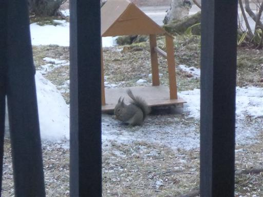
子供達は興味津々。
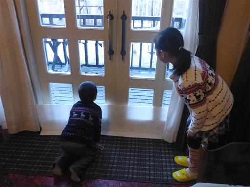
こっちに気付いた？
朝食をとったらチェックアウト。この宿は食事が美味しく、オーナーはフレンドリーで
非常に居心地の良い宿だった。
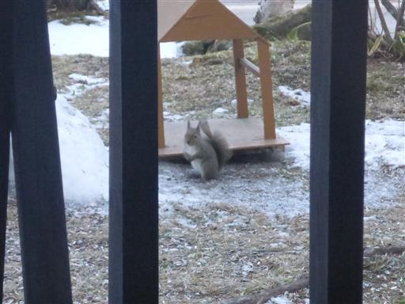
元々はしらかば2in1スキー場に行く予定だったが、
よくよく考えたらこの辺りには他にもスキー場がたくさんあるため、
2日目は別のスキー場に行ってみることにする。
訪れたのはピラタス蓼科スノーリゾート。
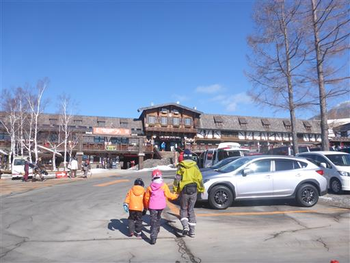
本日は快晴。空が真っ青だ。
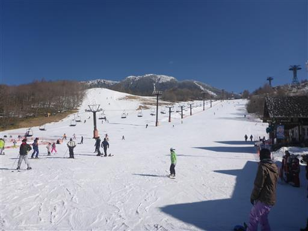
蓼科山もくっきり。
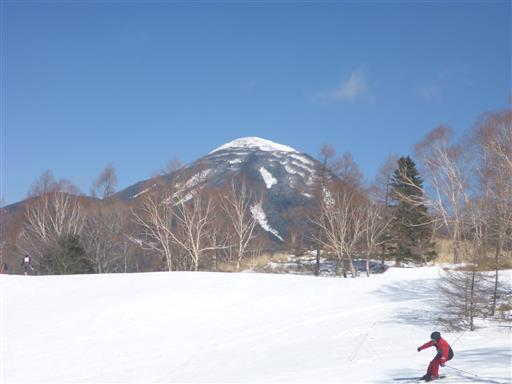
リフトに乗って上まで移動したら、早速スキー開始。
遠くに見えるのは中央アルプスの山々だ。
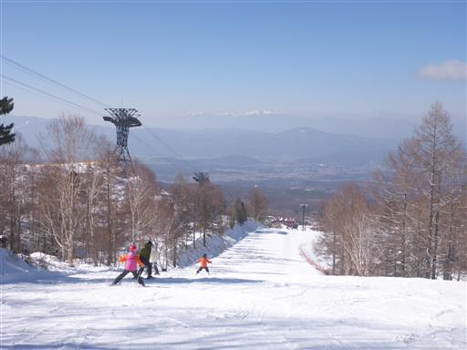
このスキー場の特徴はロープウェイでかなり高いところまで移動できるところ。
1本滑った後はロープウェイに乗ってみることにする。
長蛇の列ができていてかなり待たされる。スキーヤーだけでなく登山者や観光客も多い。
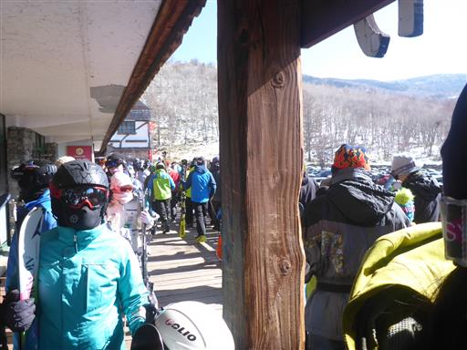
100人乗りの巨大ロープウェイに乗り込む。
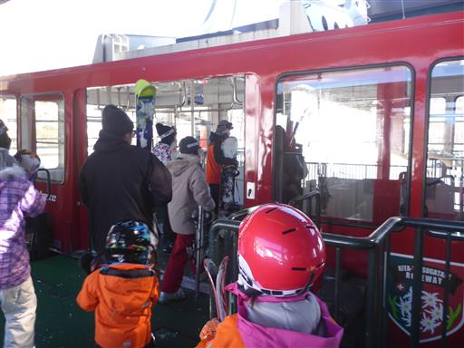
ロープウェイからは眼下にこれから滑るロングコースが見えている。
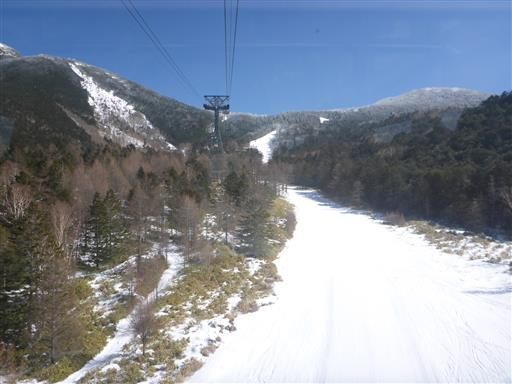
上の方にくると一面銀世界だ。
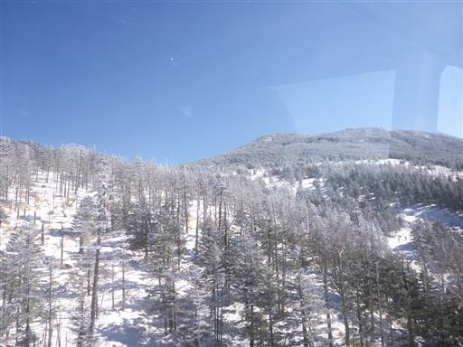
ロープウェイの山頂駅にある坪庭に到着。
スノーシューで訪れた時以来、10年振りの訪問だ。

周囲の展望は素晴らしい。
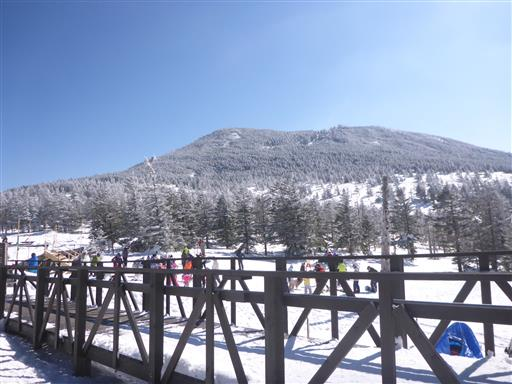
早速スキーの準備。
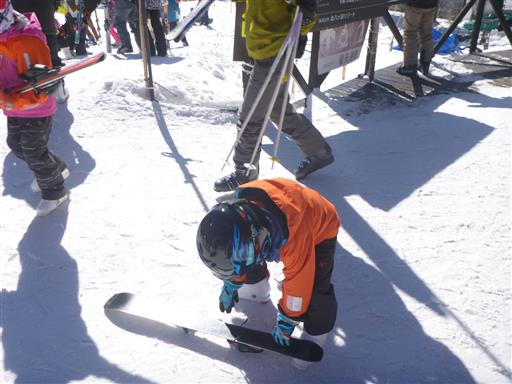
賑わう坪庭周辺。子供の数も結構多い。
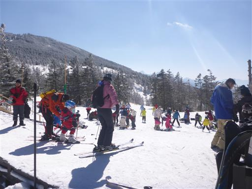
登山者は山の方へ。スノーシューをしていた時はスキーヤーに目移りしていたが、
スキーをしている時はスノーシューに目移りしてしまう。
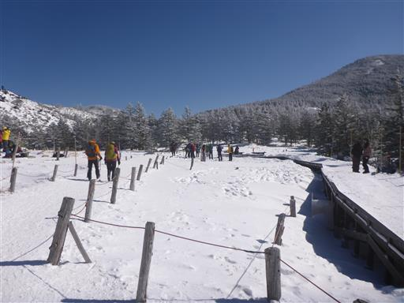
林間コースを滑っていく。今年は極端に雪が少なく、ほとんど樹氷が見られないのが残念だ。
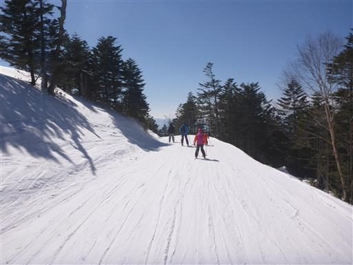
遠く八ヶ岳の頭が見えている。4000mの爽快なロングコースだ。
所々急斜面はあるが、子供でも滑りやすい。
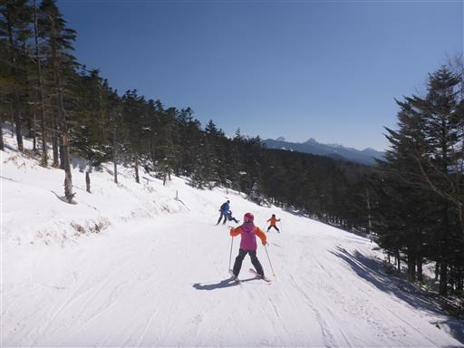
昼食はロープウェイの山頂駅でとる。休憩所の窓に張り付いた雪の結晶が美しい。
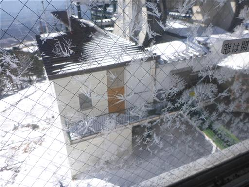
昼食後もロープウェイとリフトを交互に乗る。
ロープウェイは朝はかなり混んでいたが、それ以降はだいぶましになった。
それでも子供たちは板を運んで、並んで、ぎゅうぎゅうのロープウェイに乗るのは苦痛だったようだ。
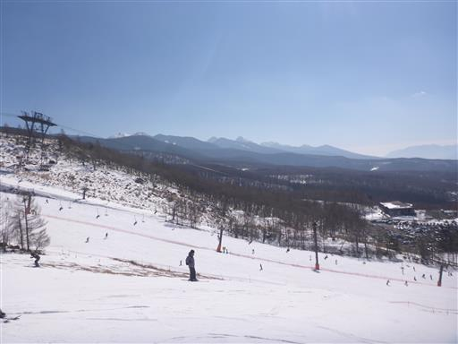
息子は慣れてきてかなりスピードを出すようになる。スピード狂になりそうだ。。。
この冬2回目のスキーは天候に恵まれ、楽しい思い出になった。
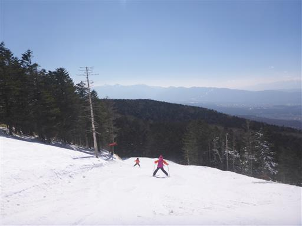